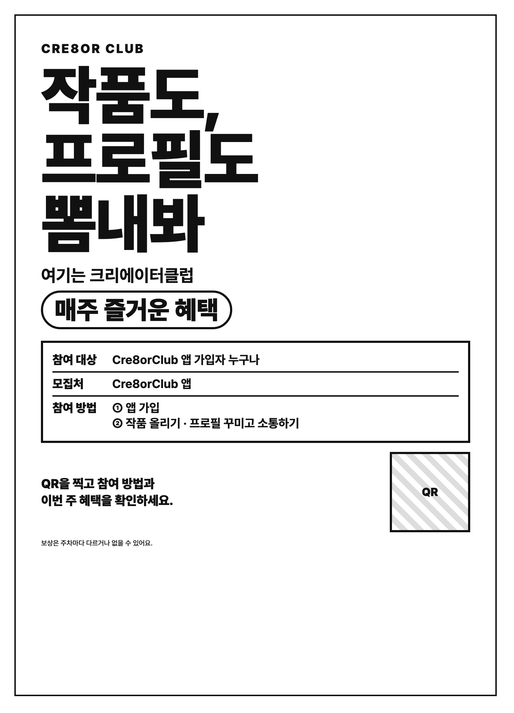

01 · 게시판
포스터를 본다
3m 밖에서 「작품도, 프로필도 뽐내봐」가 읽히고, 가까이 오면 참여 대상·모집처·참여 방법이 보여요. 금액·일정·규칙은 없어요.
- 헤드라인 작품도, 프로필도 뽐내봐 · 여기는 크리에이터클럽
- 서브문구 매주 즐거운 혜택
- 참여 대상 Cre8orClub 앱 가입자 누구나 · 모집처 Cre8orClub 앱
- 참여 방법 ① 앱 가입 ② 프로필 꾸미기 · 작품 올리기
- QR을 찍고 참여 방법과 이번 주 혜택을 확인하세요.
- 맨 아래 작게 — 보상은 주차마다 다르거나 없을 수 있어요.
